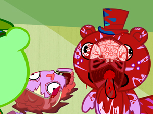

Happy Tree Friends
 De: La Frikipedia, la enciclopedia extremadamente seria.
De: La Frikipedia, la enciclopedia extremadamente seria.
De la serie Programas de TV:
Puede parecer infantil pero es más macabro que
Saw
| Idioma original:
|
animal
|
| Creador:
|
¿Quentin Tarantino?
|
| Duración:
|
Unos 7 dolorosos minutos
|
| No. Episodios:
|
Hasta que inventen una pastilla para curar el gorismo.
|
| No. Temporadas:
|
Una que jamas tendra fin
|
| ¿Aún se transmite?:
|
si, y para siempre
|
| Género:
|
Sorisas y sangre.
|
| Nivel de frikismo:
|
¿Tu que crees?
|
| Películas:
|
¿Destino final?
|
Happy Tree Friends, o para los brutos que no entienden el gringo: "Los felices amigotes del árbol" es una serie hecha por un par de sádicos masoquistas alemanes probablemente descendientes de Adolf Hitler. la serie trata de 21... (espera, 1,2,4,8,79,21...) sí, 21 personajes que mueren de formas humillantes y violentísimas hasta el desangramiento y/o desmembramiento total. La humanidad, a veces, da asco, quisas esta serie no seria apto para Retrasados bebes o "Bebes grandes" (Maricas!)
Argumento

Antes de morir
La ignorancia mató al conejo
 Corte de cabeza al estilo de la casa
Nuevo modelo de corazón externo
Toothy estampándose contra un filete de cerdo
El argumento de la serie es aparentemente sencillo: La historia va de unos bichillos enanos extremadamente monísimos que pasan el día a día jugando, yendo al Mc Donald's, ligando entre ellos, y, sobre todo, riéndose de cualquier chorrada. Esto, como es natural, ofende a los ojos de El Monstruo del Espaguetti Volador Gigante, lo cual provoca que el fuerce del destino caiga sobre todos ellos de maneras insultantes y humillantes de un modo que no se había visto ni en Destino final 2. Así pues, lo que vemos en cada uno de los cortometrajes de esta serie es un total desenfreno de conejitos empalados por vallas, ardillas atropelladas contra ambulancias, ositos atravesados por pajitas, castores explotando y dejando sus restos esparcidos a cuarenta millas... aparte de un millón y medio de atrocidades más, que dejan a las inocentes gamberradas de Rasca y Pica en paños menores.La idea principal de la serie es trastornar los cerebros de los niños menores de 3 años
Personajes
- Cuddles: un conejo amarillo bastante inocente, sin una pizca de maldad, que debe usar pantuflas porque tendrá hongos en los pies (de pasearse tanto por el bosque). Cuando lo vi por primera vez pensé que era gay o primo de Pikachu, pero después vi como se besa con la ardilla mutante esa, o sea, que de gay nada: Es un machote, y, aunque parezca mentira, también es inteligente, pues se ha ligado a la tía más buena del grupo (bueno, la verdad es que solo hay cuatro tías, esa, la mofeta, la puercoespín marimacho y la oveja loca y la verdad, yo también me habría quedado con la primera, por cuestiones, digamos, más seguras). Según sus creadores, su piel es lo más suave que existe, si, más suave que la de Bugs Bunny.
- Giggles: una ardilla, osa o ambas a la vez, de color rosa, que siempre, siempre, siempre, pero siempre, siempre, siempre acaba muerta y bien remuerta. Su forma predilecta de morir es a manos de Splendid, que, cada vez que la salva, le suele quebrantar algún órgano vital. Es un encanto de persona, tiernamente enamorada de Cuddles (sí claro, con lo puta que es la tía ya se ha tirado a todos) (sí, vale, Cuddles es un conejo, pero ¿y qué? En una serie donde los personajes mueren al final de todos los episodios para resucitarlos en el siguiente vas a pararte por ciertos detalles antinaturales?).
- Petunia: Una mofeta maniática por la limpieza... bueh, de todos modos apesta a caca.. Sus muertes, aunque menos frecuentes que las de Giggles, suelen ser las mas sádicas y horribles (Además, su chillido perfora tímpanos es estremecedor, lo que hace que, cada vez que muere, parece que estés viendo Viernes 13 Parte VI...) Pero aun así la quieres ver muerta como quieres ver muerto a Gollum ¡grrr...! ¡Como odio a ese monstruo!
- Marco Rossi. Cuando se convierte en zombi, multiplica su poder en
más de 8000 1200, y es un peligro andante capaz de arrasar continentes enteros. ¡Oh, Flippy, todos te queremos!
- Lumpy: Es un alce azul muy pero que muy estúpido, tan estúpido como tú y el tío que te está espiando. Es el que menos muere de la serie (ya que la mayor parte de hecatombes las provoca él), y parece un padre para los demás (tal vez porque es el más alto y porque es el conductor del autobús escolar), aunque su estupidez es impresionante, casi tanto como para batir el récord establecido por Patricio, el amigo de Bob Esponja
- Nutty: es un ardillo (en realidad no se conoce su sexo a ciencia cierta) drogadicto que está algo desquiciado. fanático de la droga pero en el pueblo de Happy Tree Friends también conocido como Silent Hill, o Recoon City la droga no se consigue muy fácilmente, así que Nutty debe conformarse con los dulces.
- Sniffles: un oso "hormierdero" con un gran cerebelo. Se cree que es Critters 2" y "Aracnofobia", el ser un experto y un tío inteligente en una materia, no te garantiza la supervivencia. Es tal vez el personaje al que más pena da ver morir... es tan mono... oooooooooh...
- Handy: es un castor obrero sin manos ¿Patético? Sí. ¿Absurdo? También. Se cree que perdió sus manos en un accidente relacionado con un payaso, un mono, y una aguja. Aun así, sin manos es capaz conducir, abrir puertas, construir casas en los árboles y ponerles bombas al mismo tiempo. Desgraciadamente, cuando llega el momento de usarlas para casos de vida o muerte, se ve absolutamente indispuesto. Eso sí, es un gran héroe dispuesto a ayudar a quien sea (aunque por su problema con las manos siempre lo acaba empeorando).
- Toothy: otro castor mas, pero este tuvo una reacción alérgica al probar la droga de Nutty y se volvió morado y estúpido, tanto como Lumpy. Su momento más recordado fue cuando se enganchó un ojo con una piruleta. Dios, ese episodio aún me da escalofríos...
- Russell: una nutria que se cree pirata, pero no tiene ni una pizca de mar en las venas este perdió sus piernas su mano y su ojo en el accidente con el payaso, el mono, y la aguja. ¡oh, dios; fue espantoso! ¡ni quiero recordarlo!
- The Mole: un topo ciego estilo Rompetechos, que también perdió la vista en el horrible accidente del payaso, el mono y la aguja. Como no ve y le importa una mierda todo, siempre lleva un bastón con el que golpea a cualquier imbécil que se le cruza. Aunque parezca mentira, su prolema ocular le vale casi siempre para salir bien parado en todos los episodios.
- Lifty y Shifty: un par de hermanos mapaches ladrones choros que roban y estafan a todos pero siempre mueren. ¡que bien, odio a los mapaches, sobre todo, los ladrones.
- Pop y Cub: Pop es un oso padre que va en batín hasta al trabajo. Su hijo es Cub, un oso bebe. los dos son una familia no tan feliz, quizás sea porque Pop siempre mata a Cub accidentalmente (eso dice). Muchos se preguntan cual fue el motivo por el que los padres de Cub se divorciaran, pero la mayoría lo apunta al problema con el tabaco y el alcohol de Pop.
- Splendid o Super Ardilla: Otro gran personaje, es el bueno de la película. Bueno... no tan bueno, ya que sus actos, en ocasiones, parecen obra del más maquiavélico supervillano. Es una ardilla voladora con súper poderes, primo lejano de Giggles y decapitarla accidentalmente al mismo tiempo; salvar a España del chapapote, y, por culpa de ello, incinerar a todos los animales; salvar a un alce llorica de un cepo gigante... decapitando al alce; y, el que tal vez sea su mayor poder, darle vueltas a la Tierra para crear un vórtice en el espacio-tiempo que haga al mundo retroceder diez minutos en el pasado, tan solo con el objetivo de recoger a tiempo un pastel horneado. Fue el primero en follarse a Giggles, y a esta le gustó tanto, que decidió convertirse en puta. ¿Qué pasaría si se enfrentaran Splendid y Flippy en un duelo a muerte...? Lo dejo aquí para ver si a los guionistas de la serie se les ocurre plagiarme la idea...
- Flaky: un o una puerco espín que no tiene ni una pizca de valor ni agallas, y, como es natural, ese comportamiento es el que siempre le depara la más horripilante de las muertes. Pero el mayor misterio es su sexo, no no me refiero a si tiene sexo, claro que los personajes tienen sexo durante los comerciales... me refiero a si es hombre o mujer. Yo creo que es un maricón y ya. Pero eso depende de la decision de los demás.
- Cro-marmot: una marmota congelada que se la comio un dinosaurio y la cagó en la Era de yelo 3 quedando en un bloque de hielo que nunca se derrite. pero eso le importa una pija, pues a audicionado para ser guitarrista en una banda de rock, gano un concurso de surfeo, vende helados, monta monociclos y juega béisbol.
- Mime: un reno mimo que en dia de brujas se disfraza de rodolfo el reno (no, en serio) sus poderes de mimo mas que entretener provocan la aniquilacion de sus amigos, incluso cuando intento declararsele a Petunia, pues la mató con una flecha imaginaria. Los mapaches una vez le robaron su caja fuerte, pero ni ellos se dieron cuenta. El muy idiota cada que sus amigos estan en peligro, incluso si habla por telefono, el muy wey no dice nada se queda haciendo señas que nadie entiende y solo provaca que se mueran o que el muera.
- Disco Bear: Un oso que se quedo en los años setenta, que tiene una melena del tipo afro y se la pasa bailando disco con la intencion de impresionar a Giggles y/o Petunia, pero siempre termina fracasando y muriendo, Ademas en un capitulo tuvo sobrepeso y en otro una bola de discoteca gigante lo aplastó. Es una parodia a Disco Stu de Los Simpsons, ya que por lo visto los vagos de los creadores no fueron muy originales en la creacion de los personajes y decidieron copiarlos de otras series.
- Lammy y señor
consolador pepinillo: Lammy es una oveja morada probablemente radioactiva, socio-psicopata ve al consolador pepinillo (o a cualquiera) como un ser viviente, ademas de que ella misma asesina a todos lo demas personajes que se le cruzan y la muy zorra (pero es una oveja) coyona (que es una oveja!) culpa al pepinillo pepinillo consolador tambien vale, es el nuevo personaje para celebar los 10 años de Happy tree Friends.
Precaución
La serie en si es la hostia muy cruel y macabra, se advierte a todo aquel que la vaya a ver, tome la siguentes precauciones:
- Tener tripas de acero.
- No importarte los animales.
- Tener una infancia macabra.
- Ser capaz de destripar cualquier cosa.
- Mirar a Cthulu a la cara y sobrevivir.
- Tirarse un pedo en el cine y echarle la culpa a otro.
- Tener al lado a Bruce Lee mientras la veas.
Sabías que...
- ... Jet Li apareció en un episodio y no murió?
- ... El 40% de las muertes son ocasionadas por los accidentes de Lumpy?
- ... Pop (el papá oso) y Disco Bear son muy parecidos y nunca se han visto las caras?
- ... La sangre de Lumpy tiene el equivalente suficiente para hacer una piscina dentro de un coche último modelo? Eso significa que tienen pellejos de papel, huesos de vidrio y demasiada, pero DEMASIADA SANGRE
- ... El 80% de lo que sale de sus cuerpos cuando mueren son sus cerebros? Eso quiere decir que el cerebro les llega hasta el cuello (Tanto cerebro y tan poco uso).
- ... La serie es creada por Fidel Castro?
- ... Flaky es mujer?
- ... No te lo hemos dicho eso para que no enloquezcas?
- ... Flaky terminó con miedo ya que Nutty le metió con fuerza?
- ... en un episodio amputaciones/amor se resuelve el misterio de como vuelven a la vida?
Autor(es):
- Doctor grijander
- MURO DE AGUAS
- Aque
- Fasgort
- Daniel
- Azulejos
- El Sevillano
- MarioDS
- Hangar
- Alzombie
Frikipedia 2005-2016, Licencia
GFDL 1.2 - Extraído por FrikiLeaks